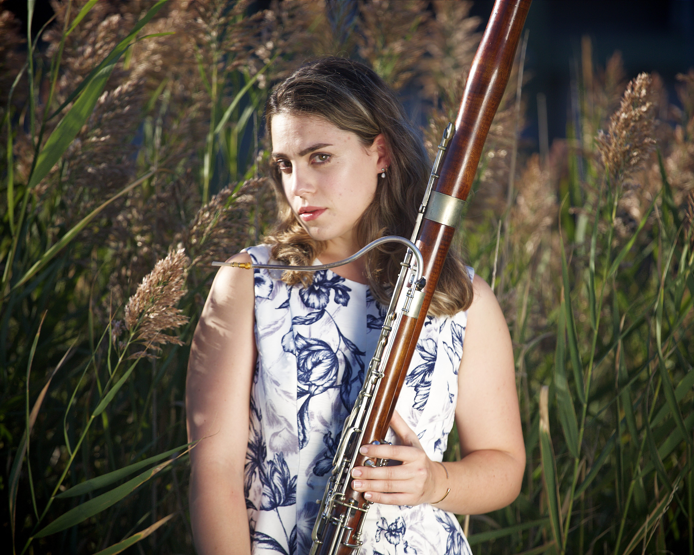
Bassoonist
"Bassoonist. Teacher. Believer in music for all...
from the concert hall to the living room floor."
Marisa Esposito is an American bassoonist currently based in Baden-Württemberg, Germany, where she serves as Principal Bassoonist of the Würth Philharmoniker, a position she has held since winning the audition in March 2022.
Her musical journey began at the State University of New York at Fredonia under the guidance of Laura Koepke, where she earned her Bachelor of Music. Driven by a perpetual wanderlust and a desire to hone the beautiful craft of musical creation, she went on to complete a Master of Music and an Artist Diploma at the Cleveland Institute of Music under Barrick Stees, former assistant principal bassoonist of the Cleveland Orchestra. That same spirit led her to relocate to Germany in September 2021 to pursue post-graduate studies with Marc Engelhardt at the Hochschule für Musik und Darstellende Kunst Stuttgart. She has also taken additional lessons with Ole Kristian Dahl in Mannheim.
With the Würth Philharmoniker, Marisa performs on some of Europe's most celebrated stages, including the Festspielhaus Baden-Baden, the Philharmonie Berlin, the Festspielhaus Salzburg, and the Enescu Music Festival. She has performed under the baton of conductors including Christian Thielemann, Kent Nagano, Charles Dutoit, and Karina Canellakis, and alongside soloists such as Anne-Sophie Mutter, Hélène Grimaud, and Anna Netrebko.
Marisa appears on two commercial recordings: Brahms, Schubert & Others: Orchestral Songs, featuring Thomas Hampson, the Würth Philharmoniker, and conductor Claudio Vandelli, released by Hänssler Records; and Vali: The Being of Love with the Württembergische Philharmonie Reutlingen, released by Naxos.
Marisa Esposito, bassoon
Marisa Esposito, bassoon
Bertoni, Concerto in F major, I · Faculty Recital · Baldwin Wallace University · 2021
Vivaldi, Cello Sonata in B♭ major, RV 45 · Artist Diploma Recital · Cleveland Institute of Music · 2019
Schreck, Sonata · "Farewell Cleveland" Recital · 2021
As guest musician, Marisa has appeared with the Stuttgarter Philharmoniker, the Württembergische Philharmonie Reutlingen, the Deutsche Philharmonie Merck, the Erie Philharmonic, the Youngstown Symphony, and CityMusic Cleveland Chamber Orchestra, among others.
First Prize, Meg Quigley Vivaldi Competition, Los Angeles (2019). First Prize, National Repertory Orchestra Concerto Competition, Breckenridge, CO (2019). Second Prize and Special Prize for Best Artistic Creation, 13th Michał Spisak Competition, Poland (2021).
Marisa has held faculty appointments at Baldwin Wallace University and the State University of New York Fredonia, where she taught applied bassoon, reed making and pedagogy, influencing the next generation of bassoonists and music educators. Truly a teacher of all ages, she is also the founder of Music with Marisa, a free interactive music program for families with young children, established in 2017.
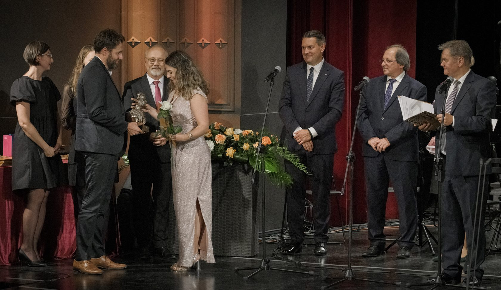
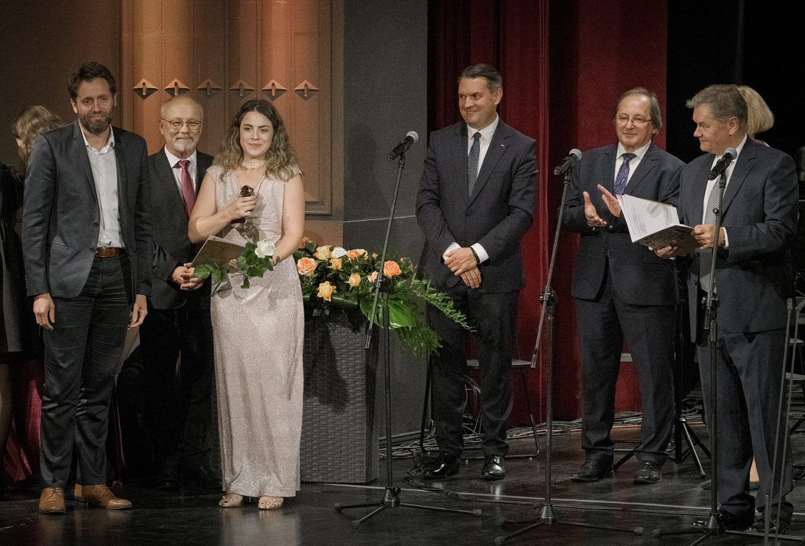
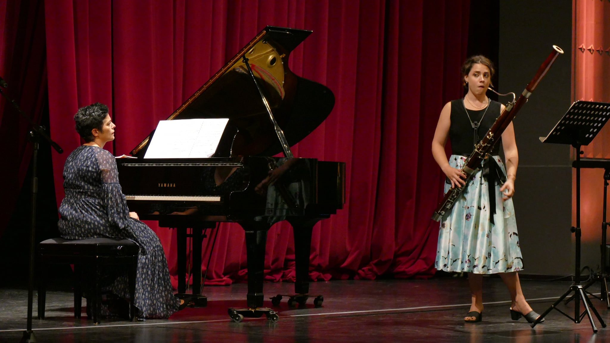
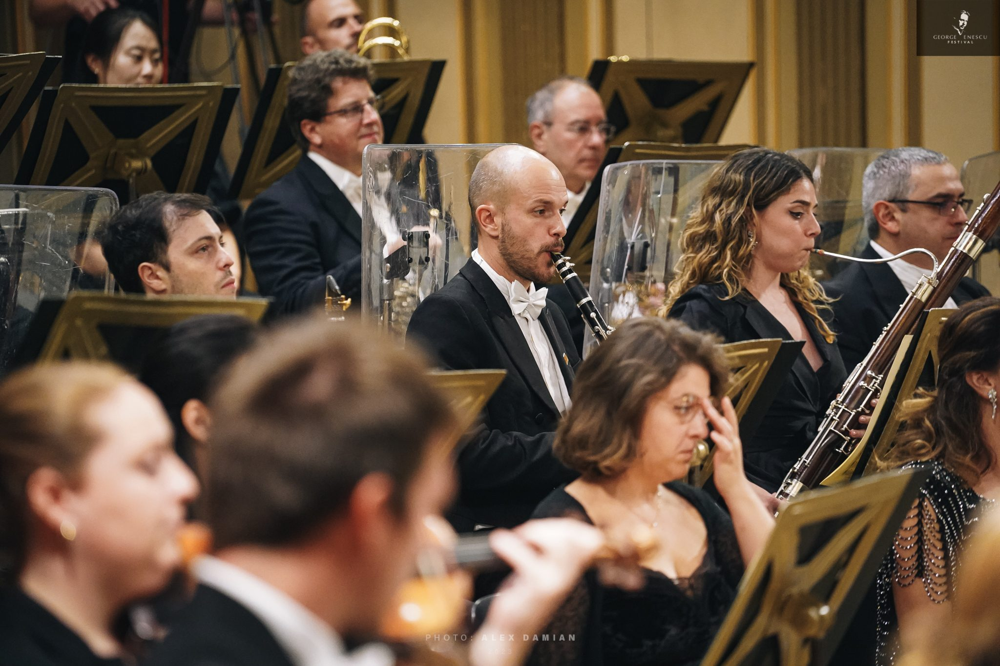
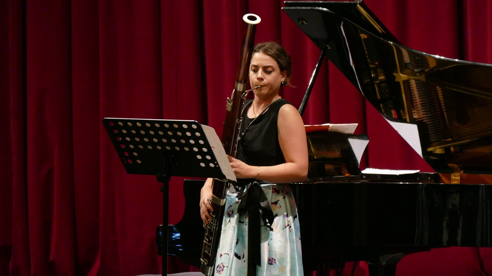
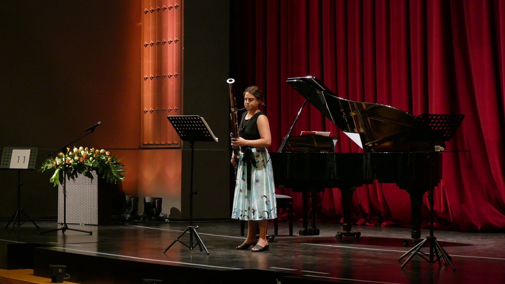
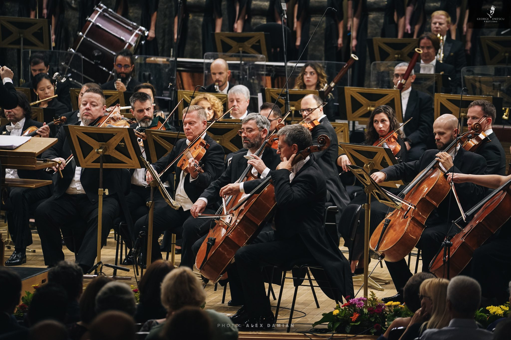
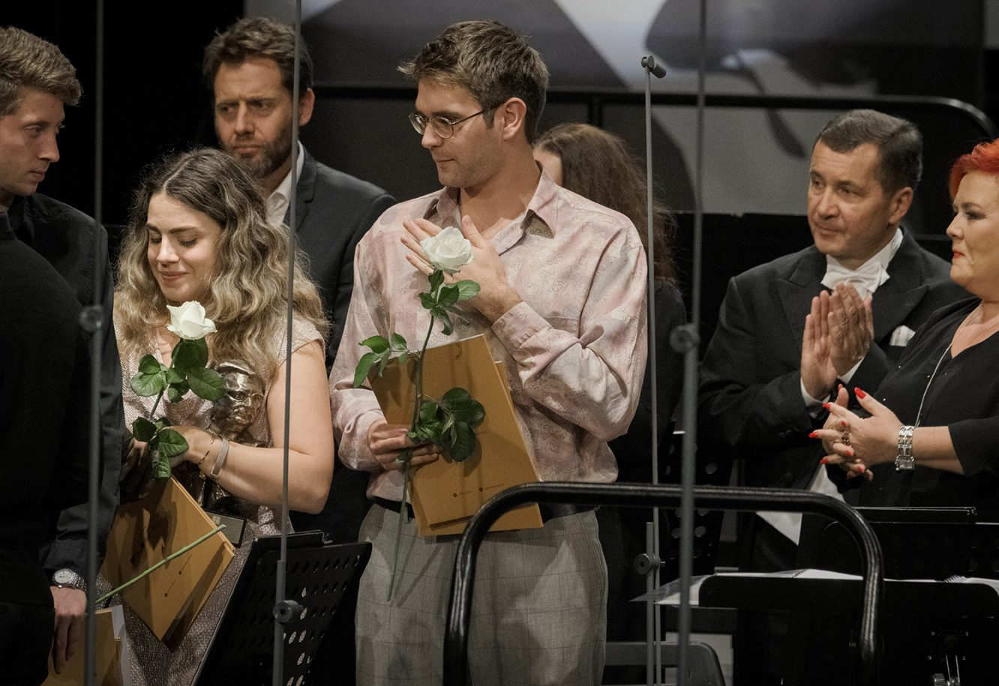
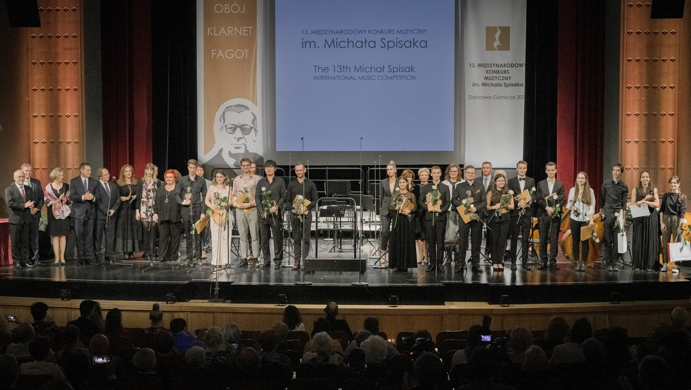
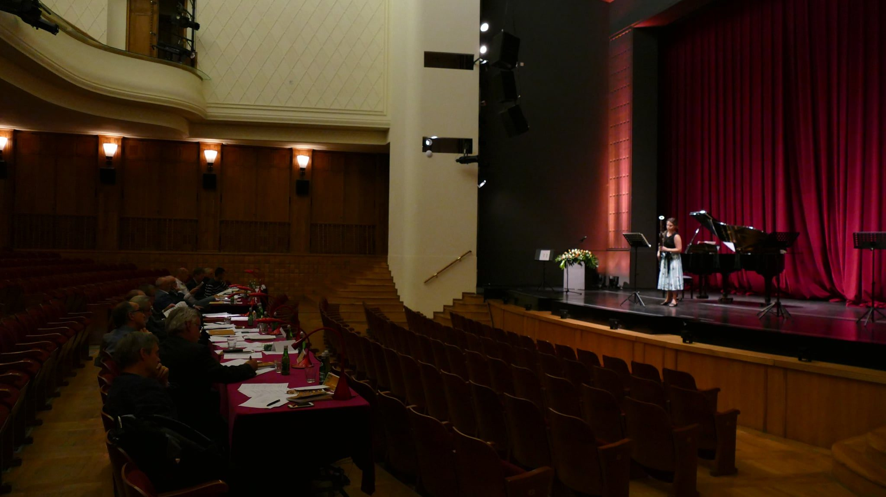
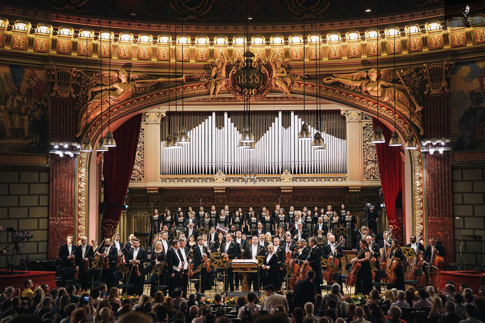
Marisa's artistic philosophy is rooted in the belief that one is never done learning, and that inspiration is found everywhere. Central to this is her conviction that music belongs to everybody, and that nurturing a relationship with music should begin as early as possible.
She has held faculty appointments at Baldwin Wallace University and the State University of New York at Fredonia, where she taught applied bassoon, reed making and pedagogy, influencing the next generation of bassoonists and music educators. She is also the founder of Music with Marisa, bringing her passion for music education to families and young children since 2017.
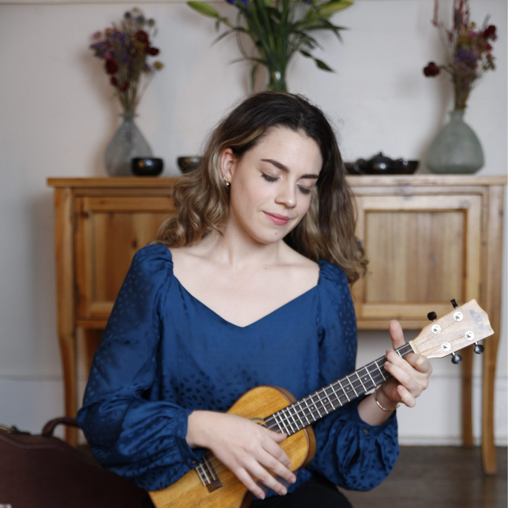
Shaping the next generation of musical beings.
Founded in 2017, Music with Marisa brings together families with young children and babies to sing, move, and make music together. At its heart is the belief that every person, child and parent alike, has the capacity to participate joyfully in music. This program exists to help them find and nurture that joy.
By reconnecting parents with their own musicality, and reminding them how naturally it comes to all humans (even if we've lost it along the way) Marisa's classes create a ripple effect that shapes not just children, but whole families. She believes that our shared human experience, of which music is an integral part, should help to shape communities and society. This is the change she hopes to contribute to in the world. Music is not a performance. It's a community.
Offered Free of Charge Sign Up for a Class ↗A 501(c)(3) nonprofit dedicated to building strong families and strong communities.
For orchestral engagements, solo appearances, masterclasses, or teaching inquiries, please reach out using the form or contact directly.